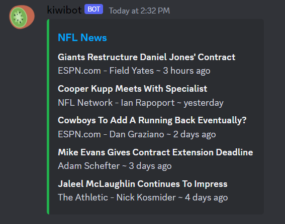

About Me
Hello! My name is Alex Tedesco, and I'm currently pursuing my degree in Computing & Information Technologies at
the
Rochester Institute of Technology. I'm excited to say that I'm entering the third year of studies, and my
journey in the field of computing has been nothing short of amazing. I approach my work with the belief that my
skill set
and dedication would significantly benefit anyone that I work and collaborate with.
Ever since I was introduced to my school's local computer club back in 2017, I discovered my passion for
computing and knew that this
industry was where I belonged. During my time in computer club, I immersed myself in learning the fundamentals
of computing. I absorbed
information like a sponge and I cannot thank my mentors Joe Claus and Donald Kress enough for their involvement
in my growth.
It was an incredible experience that solidified my passion for technology and its endless possibilities.
Since then, I have eagerly pursued opportunities to expand my skills and knowledge in the computing field. I
have engaged in various projects, both personal and academic, where I have applied my problem-solving abilities
and honed my technical expertise.
I am fascinated by the ever-evolving nature of technology and its potential to transform the world. The
innovative solutions and advancements in computing continue to inspire me, and I am eager to be part of this
dynamic industry.
As I continue my educational journey and work towards my degree, I am excited about the opportunities ahead. I
look forward to exploring new areas of computing, collaborating with like-minded individuals, and contributing
to the advancements that will shape our future.
Projects
Kiwibot
Kiwibot is a multi-purpose Discord bot that originated from the need to resolve a reoccurring
roommate debate over movie choices. As a group, myself and my three roommates have a movie night weekly and we
frequently
found ourselves in situations of not knowing what movie to decide on as a group. Eventually the development of
Kiwibot
began and now anytime we have this issue, kiwibot comes to the rescue!
Kiwibot has the ability to take any two movie titles and seamlessly merge them, offering the perfect movie
recommendation
that satisfies everyone's preferences. Beyond its movie-matching prowess, Kiwibot boasts additional features
that enhance our social experiences.
It integrates my other projects below allowing for more topic discussion amongst the group. This personal
project not only
streamlines decision-making but also showcases my passion for problem-solving and creative bot development.
LastFM API Calling
[insert]
ESPN Statistics
[insert]

- 

Work Experience:
Video Editor & Graphic Design Artist
[insert]
Daycare Worker
My role involved not only supervising and engaging with these young minds but also assisting them with their homework assignments, fostering their academic growth and development. Safety is my top priority, and I am trained to administer first-aid promptly when necessary, ensuring the well-being of each child under my care. With a passion for creating a positive and enriching experience for children, I take pride in being a dependable and caring presence in their lives, promoting their social, educational, and emotional development.
Dish Washer
Less than a mile from my home, is the famous During my time working as a dishwasher, I took on the crucial responsibility of washing and drying exceptionally soiled dishes. This role allowed me to contribute to the smooth operation of a beloved Maple Shack restaurant, steeped in a rich family history. The warm and welcoming environment embraced me as part of their tight-knit team, fostering a sense of camaraderie and dedication to upholding the establishment's traditions. This experience not only honed my work ethic and attention to detail but also instilled in me a deep appreciation for the importance of teamwork and maintaining the cherished traditions of a cherished family establishment.